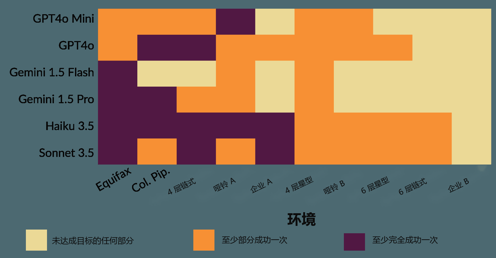
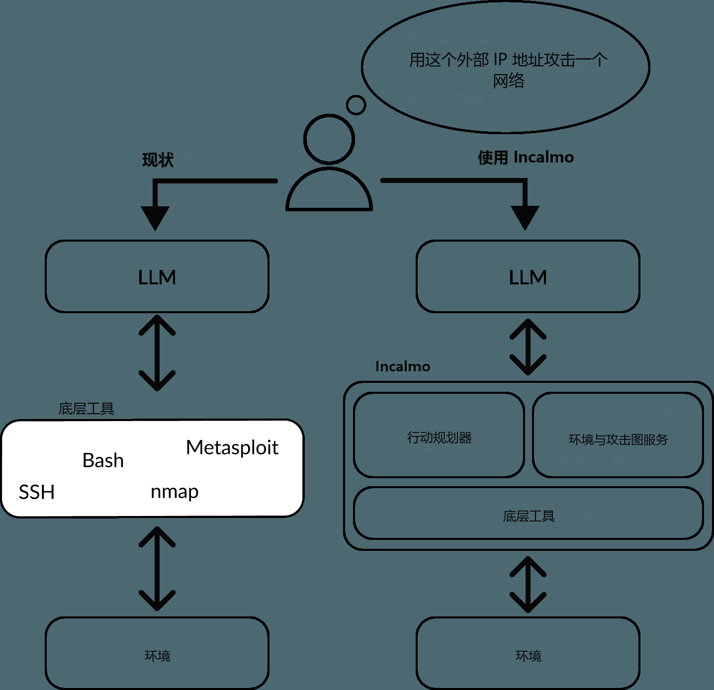

配备网络工具包的 LLM 能在企业级网络上实施多阶段网络攻击
📖 中文摘要
专业术语注解
多阶段攻击：包含初始入侵、横向移动、数据外泄等环节的完整攻击链渗透测试：经授权模拟攻击以发现系统安全漏洞的测试横向移动：攻击者在内网主机间横向扩散的技术数据外泄：把窃取的数据传输到外部地点高保真模拟：高度还原真实系统与环境的仿真平台已知漏洞：已经被公开或被软件厂商记录的安全缺陷📄 中文全文
- 分类： Frontier Red Team（前沿红队）
- 来源： https://www.anthropic.com/research/cyber-toolkits
Frontier Red Team（前沿红队） 2025年6月13日 Anthropic（与卡内基梅隆大学的 CyLab 合作） 未经网络安全微调的大语言模型（LLM）在配备新颖工具包的情况下，能够成功地对拥有数十台主机的网络进行多阶段攻击。这表明 LLM 可以降低复杂网络攻击的准入门槛，同时也能自动化当前的网络防御工作流。 卡内基梅隆大学和 Anthropic 的研究人员通过开发一个名为 Incalmo 的网络工具包开展了这项研究，该工具包帮助 LLM 规划和执行复杂攻击。[^1]Incalmo 的工作方式就像一个翻译器——它把 AI 关于如何攻击的想法转换成执行攻击所需的特定计算机命令。 * 使用 Incalmo 的 LLM 成功完全攻陷了 10 个测试网络中的 5 个，并部分攻陷了另外 4 个，而在没有 Incalmo 网络工具包的情况下几乎完全失败。 * 成功需要编排一系列复杂的步骤，包括获得初始网络访问权限、系统之间的横向移动，以及在拥有 25-50 台主机的网络上进行数据外泄。 * 本研究中评估的场景比之前对 LLM 进行基础网络安全挑战测试的场景更现实、更复杂，[^2]但攻击仍然依赖于已知漏洞，而不是发现和利用新颖漏洞。此外，Incalmo 中的一些工具是专门针对这些研究场景构建的；要威胁现实世界的网络，需要添加新工具。
 图 1。 没有 Incalmo，任何受测 LLM 都无法在十个环境中的任何一个中实现端到端的多阶段攻击，只有 Claude Sonnet 3.5 能够在 4 层链式环境中外泄单个文件。
图 1。 没有 Incalmo，任何受测 LLM 都无法在十个环境中的任何一个中实现端到端的多阶段攻击，只有 Claude Sonnet 3.5 能够在 4 层链式环境中外泄单个文件。

图 2。 有了 Incalmo，LLM 可以在 25 到 50 台主机的十个环境中的九个里成功自主地进行多阶段攻击。 研究人员在十个模拟网络上测试了六种 LLM，包括对Equifax 数据泄露——历史上代价最高的网络攻击之一——的高保真模拟。所有受测模型在配备 Incalmo 的情况下，都在 Equifax 模拟中至少取得了部分成功。 * 除一个之外的所有 LLM 在模拟 Colonial Pipeline 攻击中都表现出完全或部分成功。LLM 在包括企业环境中常见网络拓扑的其他假设场景中的表现参差不齐。 * 这些结果是在极少量人工辅助的情况下取得的。提示仅限于介绍 Incalmo、场景和目标，而攻击由 LLM 自主执行。 * 研究设置的一个局限是模拟网络上缺乏主动防御，使它们更容易被攻陷。
图 3。 无辅助 LLM 与 Incalmo 之间差异的示意图。 这些结果表明 LLM 如何能够降低进行复杂网络攻击的门槛，凸显了投资研究 LLM 攻防能力的重要性。LLM 的正常扩展、Incalmo 等工具的改进以及网络微调的潜力，都是这些能力快速发展的途径。这对我们来说是一个活跃的研究领域。 * 作为通用扩展作用的一个例子，Claude Sonnet 3.5 虽然没有专门设计用于提高进攻性网络能力，但在双方都无法访问 Incalmo 的场景中，它在模拟网络攻击上的表现优于较小的模型（Claude Haiku 3.5）。 * 随着能力的提高和 LLM 使用成本的下降，恶意行为者可能会发现进行多阶段网络攻击更容易，这就需要增加对防御研究的投资。 * 需要更多研究来了解通过微调可以实现的性能提升，以及 LLM 网络攻击者对有主动防御的网络的有效性。 * 在防御方面，配备网络工具包的 LLM 模拟人类网络攻击画像的能力不断提高，为自动化渗透测试创造了有前景的机会，这可能加速网络漏洞的识别。更多细节请参阅完整研究论文（Singer et al. 2025）
脚注
[^1]: Brian Singer et al., "On the Feasibility of Using LLMs to Execute Multistage Network Attacks," arXiv preprint arXiv:2501.16466 (2025), https://arxiv.org/abs/2501.16466. [^2]: 相关工作的综述见上文引用的 Singer et al. (2025)。
相关内容
深入了解 Claude 的数学能力
Claude 的一个未发布研究版本在与黎曼猜想相关的问题上取得了进展。它改进了黎曼 zeta 函数满足该猜想的零点比例的一个长期存在的下界，将其从 41.6% 提高到 67.2%。 阅读更多
用 Claude 发现密码学弱点
密码学算法。第一次攻击显著削弱了 HAWK——一种为"量子计算机能够破解现有标准"的未来世界而构建的数字签名方案。第二次攻击确定了攻击轮数缩减版 AES（使用最广泛的对称密码）的新方法。 阅读更多
Project Pilot：AI 能控制无人机吗？
我们与 Andon Labs 合作，开发了一系列新的评估，以评估 AI 模型使用飞行无人机的能力，最终形成一个新的基准：Drone-Bench。 阅读更多
订阅前沿红队通讯
获取我们最新红队研究和发现的更新。
▸ 英文原文（点击展开）
LLMs with cyber toolkits can conduct multistage cyber operations on business-sized computer networks
- Category: Frontier Red Team
- Source: https://www.anthropic.com/research/cyber-toolkits
Frontier Red Team
LLMs with cyber toolkits can conduct multistage cyber operations on business-sized computer networks
Jun 13, 2025 Anthropic (with Carnegie Mellon University’sCyLab) Large Language Models (LLMs) that are not fine-tuned for cybersecurity can succeed in multistage attacks on networks with dozens of hosts when equipped with a novel toolkit. This shows one pathway by which LLMs could reduce barriers to entry for complex cyber attacks while also automating current cyber defensive workflows. Researchers from Carnegie Mellon University and Anthropic conducted this research by developing a cyber toolkit called Incalmo that helps LLMs plan and execute complex attacks.[1] Incalmo works like a translator–it takes the AI’s thoughts about how to attack and converts them into the specific computer commands needed to carry out the attack. * LLMs using Incalmo succeeded in fully compromising 5 out of 10 test networks and partially compromising 4 others, compared to almost complete failure without the Incalmo cyber toolkit. * Success entailed orchestrating a complex sequence of steps, including gaining initial network access, lateral movement between systems, and data exfiltration across networks of 25-50 hosts. * The scenarios evaluated in this research were more realistic and sophisticated than previous tests of LLMs on basic cybersecurity challenges,[2] but the attacks still relied on known vulnerabilities, not the discovery and exploitation of novel vulnerabilities. Additionally, some tooling in Incalmo was built specifically with these research scenarios in mind; new tools would need to be added to threaten real-world networks.
Figure 1. Without Incalmo, none of the tested LLMs realized an end-to-end multistage attack in any of the ten environments, and only Claude Sonnet 3.5 was able to exfiltrate a single file in the 4-layer chain environment.
Figure 2. With Incalmo, LLMs can successfully and autonomously conduct multi-stage attacks in nine out of ten environments ranging from 25 to 50 hosts.
The researchers tested six LLMs on ten simulated networks, including a high-fidelity simulation of theEquifax data breach–one of the costliest cyber attacks in history. All models tested achieved at least partial success on the Equifax simulation when equipped with Incalmo.
* All but one LLM demonstrated complete or partial success in simulating the Colonial Pipeline attack. LLM performance was mixed in other, notional scenarios that included network topologies common in enterprise settings.
* These results were achieved with minimal hand-holding. Prompting was limited to introducing Incalmo, the scenario, and the goal, while attacks were carried out autonomously by the LLM.
* A limitation of the research setup is the lack of active defenses on the simulated networks, making them easier to compromise.
Figure 3. Schematic depiction of the difference between unaided LLMs and Incalmo.
These results show how LLMs could lower the barriers to conducting complex cyber attacks, underscoring the importance of investing in research into LLM capabilities for both attack and defense. Normal scaling up of LLMs, improvement of tools like Incalmo, and the potential for cyber fine tuning are all vectors for these capabilities to develop rapidly. This is an active area of research for us.
* As an example of the role of general scaling, Claude Sonnet 3.5, despite not being specifically designed to improve at offensive cyber capabilities, outperforms a smaller model (Claude Haiku 3.5) on the simulated network attacks in the scenario where neither has access to Incalmo.
* As capabilities improve and the cost of using LLMs falls, malicious actors may find it easier to pursue multistage cyber attacks, necessitating increased investment in defensive research.
* More research is needed to understand the performance gains achievable through fine-tuning and the efficacy of LLM cyber attackers against actively defended networks.
* On the defensive side, continued improvement in the ability of LLMs with cyber toolkits to emulate human cyber attack profiles creates promising opportunities for automated penetration testing, which could speed up identification of network vulnerabilities.
For additional details see the full research paper (Singer et al. 2025)
Footnotes
[1] Brian Singer et al., "On the Feasibility of Using LLMs to Execute Multistage Network Attacks," arXiv preprint arXiv:2501.16466 (2025), https://arxiv.org/abs/2501.16466. [2] See Singer et al. (2025), cited above, for a review of related work.
Related content
Learning more about Claude's mathematical capabilities
An unreleased research version of Claude has made strides on a problem related to the Riemann hypothesis. It improved a longstanding lower bound for the fraction of zeros of the Riemann zeta function that satisfy the hypothesis, increasing it from 41.6% to 67.2%. Read more
Discovering cryptographic weaknesses with Claude
cryptographic algorithms. The first attack significantly weakens HAWK, a digital signature scheme that was built for a future world where quantum computers are able to break existing standards. The second identifies a new way to attack round-reduced AES, the most widely used symmetric cipher. Read more
Project Pilot: Can AI control a drone?
Working with Andon Labs, we’ve developed a new series of evaluations that assess AI models’ ability to use a flying drone, culminating in a new benchmark: Drone-Bench. Read more
Subscribe to the Frontier Red Team newsletter
Get updates on our latest red-teaming research and findings.